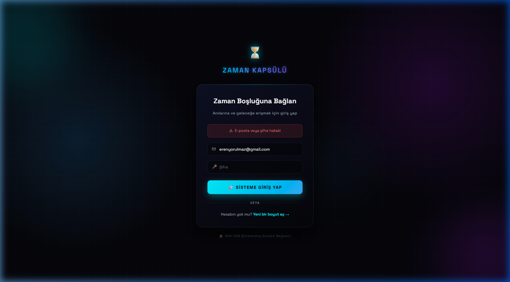
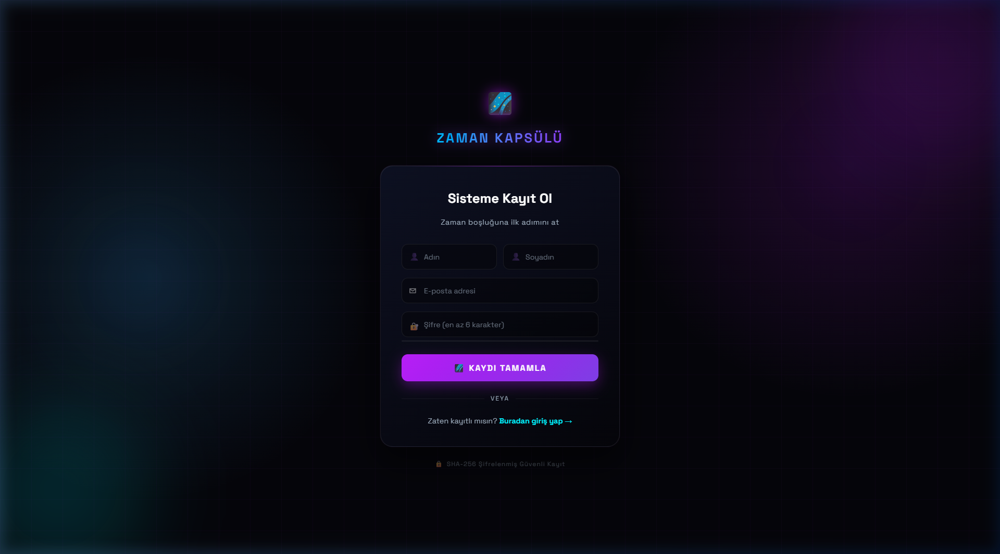
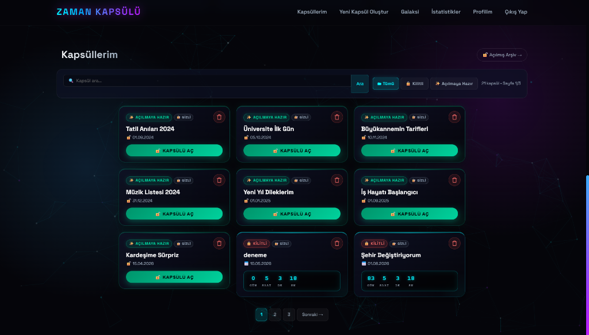
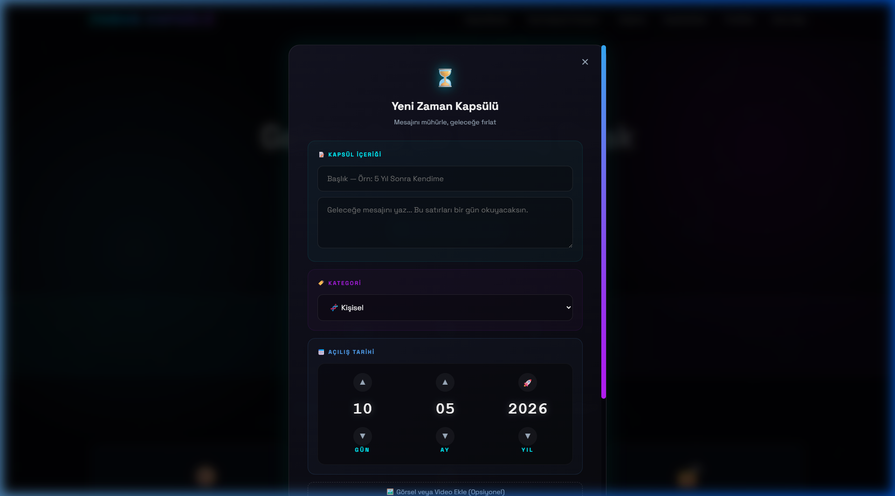
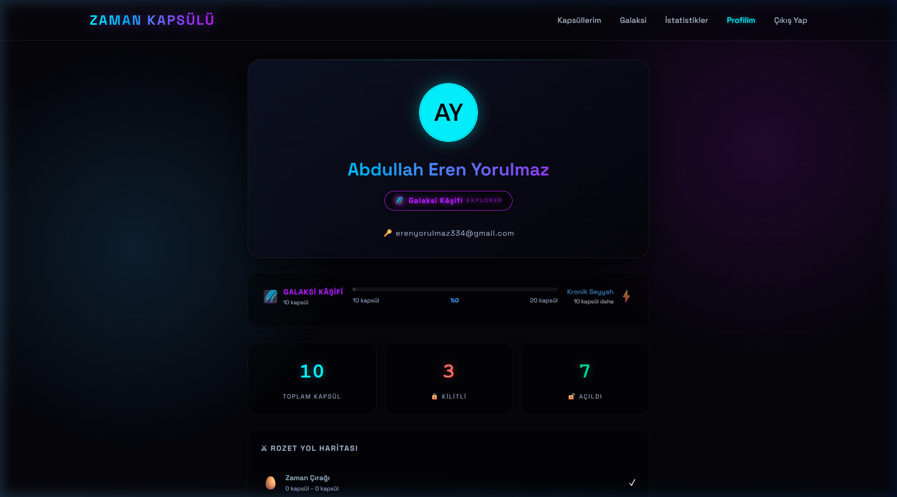
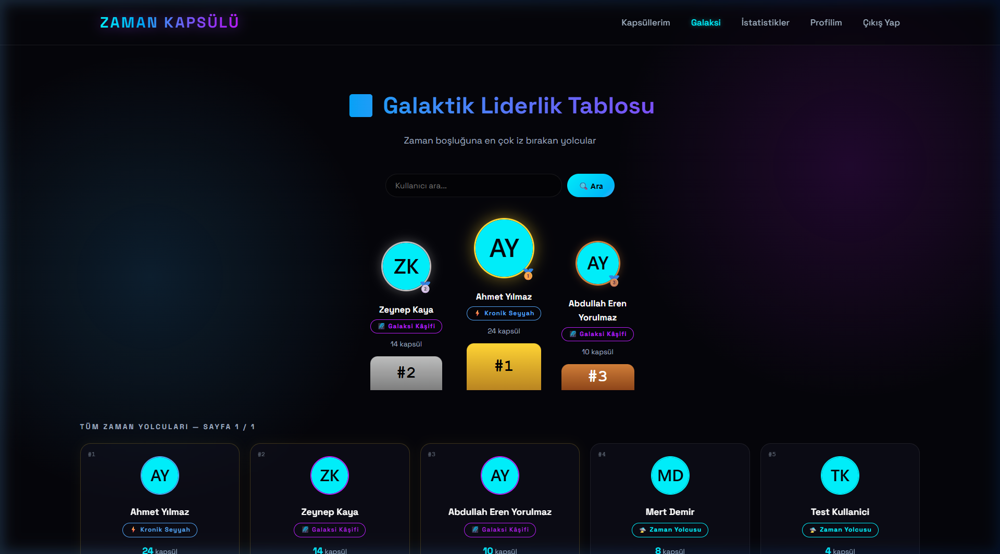
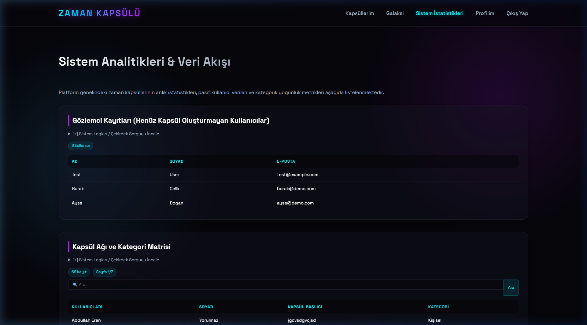
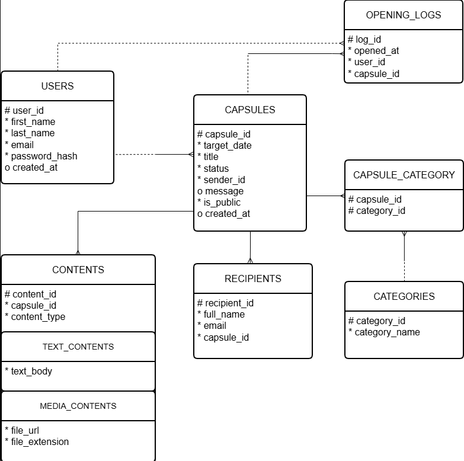
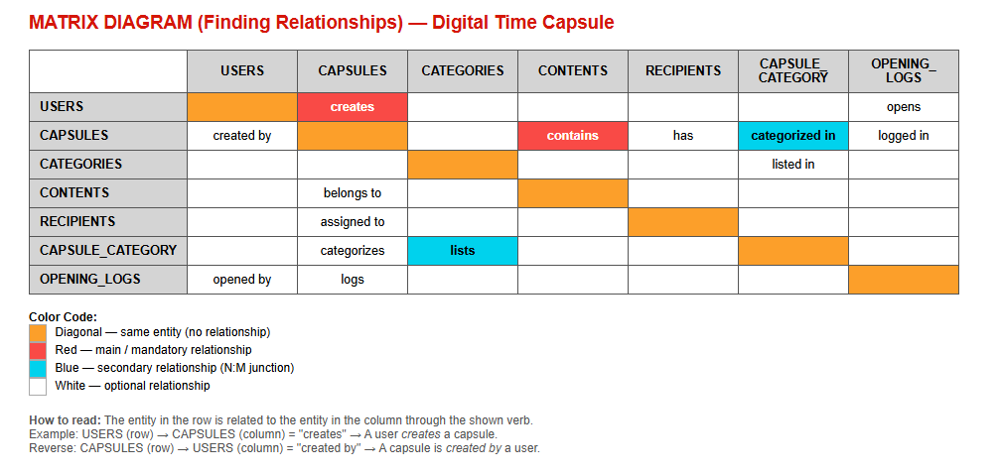

2025–2026 Spring Semester Project Report
Abdullah Eren Yorulmaz — 2310205028
Mahammadali Rasulzade — 2310205590
Sait Yasir Başaran — 2310205040
Courses: Database Systems (CPE210) & Internet-Based Programming (CPE212)
Date: May 10, 2026
Technologies: PHP 8, MySQL, HTML5, CSS3, JavaScript ES6+, AJAX
| Student Name | Student No | Contribution | Responsibilities |
|---|---|---|---|
| Abdullah Eren Yorulmaz | 2310205028 | 100% | Backend development (PHP, database integration, AJAX, session management) |
| Mahammadali Rasulzade | 2310205590 | 100% | Testing, debugging, and report preparation |
| Sait Yasir Başaran | 2310205040 | 100% | Frontend development (HTML, CSS, JavaScript, UI design) |
Digital Time Capsule is a web application that allows users to create "capsules" containing text messages and media files (photos/videos) and lock them until a specified opening date.
Technology Stack: PHP 8, MySQL (PDO), HTML5, CSS3, JavaScript ES6+, AJAX (Fetch API), Chart.js, SHA-256

Figure 1 — Login Page
The authentication page where users sign in with their email and password. Credentials are validated on both the client side (JavaScript) and server side (PHP). Passwords are compared using SHA-256 hashing. A descriptive error message is shown on failed login attempts.

Figure 2 — Registration Page
New users register with first name, last name, email, and password. JavaScript validates format and length before submission; PHP checks for duplicate emails on the server. Passwords are securely stored using SHA-256 hashing.

Figure 3 — Home Page: Capsule List with Search, Filter, and Pagination
The main dashboard listing all capsules of the logged-in user. Key features:

Figure 4 — Capsule Creation Form
A modal form for creating new capsules. Users select an opening date using a spinner date picker and optionally upload a media file. Past date selection is blocked by JavaScript validation.

Figure 5 — Profile Page: Statistics, Badge System, and Archive
Displays personal statistics and the user's capsule archive:

Figure 6 — Galaxy: Global User Leaderboard
A platform-wide leaderboard ranking all users by capsule count. The top three users are highlighted with a special podium display. Search by username and pagination are supported.

Figure 7 — Statistics Page: SQL Query Results and Category Chart
This page demonstrates all 5 required SQL query types running against the live database: Subquery, Join, Group By, Date Functions, and Character Functions. Results are displayed in paginated tables with search support. Category distribution is visualized using a Chart.js doughnut graph.
The authentication system is implemented in three layers:
hash('sha256', $password) before storage. Plain-text passwords are never saved.$_SESSION['user_id'] is set. All protected pages verify the session.The application's core functionality is built around the capsule lifecycle:
CSS Design: A dark-mode cyberpunk theme with CSS custom properties, keyframe animations, hover effects, and a responsive grid layout delivers a modern user experience.
Three critical operations are performed without page reloads using the Fetch API:
ajax_islemler.php; on success, the capsule card is removed from the DOM.get_capsule_content.php as JSON and used to dynamically populate the pop-up.The database consists of 7 core entities with the following relationships:
| Entity | Primary Key | Key Attributes | Relationships |
|---|---|---|---|
| USERS | user_id (PK) | first_name, last_name, email, password_hash, created_at | 1:N → CAPSULES, OPENING_LOGS |
| CAPSULES | capsule_id (PK) | sender_id (FK), title, message, target_date, status, is_public, created_at | N:1 → USERS; 1:N → CONTENTS, CAPSULE_CATEGORY, RECIPIENTS, OPENING_LOGS |
| CATEGORIES | category_id (PK) | category_name | N:M ↔ CAPSULES (via CAPSULE_CATEGORY) |
| CONTENTS (Supertype) | content_id (PK) | capsule_id (FK), content_type (discriminator) | N:1 → CAPSULES; subtypes: TEXT_CONTENTS, MEDIA_CONTENTS |
| RECIPIENTS | recipient_id (PK) | capsule_id (FK), full_name, email | N:1 → CAPSULES |
| CAPSULE_CATEGORY | capsule_id+category_id (PK) | capsule_id (FK), category_id (FK) | Bridge table: CAPSULES ↔ CATEGORIES |
| OPENING_LOGS | log_id (PK) | capsule_id (FK), user_id (FK), opened_at | N:1 → CAPSULES, USERS |

Figure 8 — Entity Relationship Diagram (Oracle Notation) — 7 Entities with Supertype/Subtype

Figure 9 — Matrix Diagram: Entity Relationship Verbs
CREATE TABLE USERS (
user_id INT AUTO_INCREMENT PRIMARY KEY,
first_name VARCHAR(50) NOT NULL,
last_name VARCHAR(50) NOT NULL,
email VARCHAR(100) NOT NULL UNIQUE,
password_hash VARCHAR(64) NOT NULL,
created_at DATETIME DEFAULT CURRENT_TIMESTAMP
);
CREATE TABLE CAPSULES (
capsule_id INT AUTO_INCREMENT PRIMARY KEY,
sender_id INT NOT NULL,
title VARCHAR(200) NOT NULL,
message TEXT,
target_date DATE NOT NULL,
status ENUM('Locked','Unlocked','Opened') DEFAULT 'Locked',
is_public TINYINT(1) DEFAULT 0,
created_at DATETIME DEFAULT CURRENT_TIMESTAMP,
FOREIGN KEY (sender_id) REFERENCES USERS(user_id)
);
CREATE TABLE CATEGORIES (
category_id INT AUTO_INCREMENT PRIMARY KEY,
category_name VARCHAR(50) NOT NULL
);
CREATE TABLE CONTENTS (
content_id INT AUTO_INCREMENT PRIMARY KEY,
capsule_id INT NOT NULL,
content_type ENUM('Text','Media') NOT NULL,
text_body TEXT,
file_url VARCHAR(500),
file_extension VARCHAR(10),
FOREIGN KEY (capsule_id) REFERENCES CAPSULES(capsule_id)
);
CREATE TABLE RECIPIENTS (
recipient_id INT AUTO_INCREMENT PRIMARY KEY,
capsule_id INT NOT NULL,
full_name VARCHAR(100) NOT NULL,
email VARCHAR(100) NOT NULL,
FOREIGN KEY (capsule_id) REFERENCES CAPSULES(capsule_id)
);
CREATE TABLE CAPSULE_CATEGORY (
capsule_id INT NOT NULL,
category_id INT NOT NULL,
PRIMARY KEY (capsule_id, category_id),
FOREIGN KEY (capsule_id) REFERENCES CAPSULES(capsule_id),
FOREIGN KEY (category_id) REFERENCES CATEGORIES(category_id)
);
CREATE TABLE OPENING_LOGS (
log_id INT AUTO_INCREMENT PRIMARY KEY,
capsule_id INT NOT NULL,
user_id INT NOT NULL,
opened_at DATETIME DEFAULT CURRENT_TIMESTAMP,
FOREIGN KEY (capsule_id) REFERENCES CAPSULES(capsule_id),
FOREIGN KEY (user_id) REFERENCES USERS(user_id)
);
SELECT first_name, last_name, email
FROM USERS
WHERE user_id NOT IN (
SELECT DISTINCT sender_id FROM CAPSULES
);
SELECT U.first_name, U.last_name, C.title, CAT.category_name FROM CAPSULES C JOIN USERS U ON C.sender_id = U.user_id JOIN CAPSULE_CATEGORY CC ON C.capsule_id = CC.capsule_id JOIN CATEGORIES CAT ON CC.category_id = CAT.category_id;
SELECT CAT.category_name, COUNT(CC.capsule_id) AS total_capsules FROM CATEGORIES CAT LEFT JOIN CAPSULE_CATEGORY CC ON CAT.category_id = CC.category_id GROUP BY CAT.category_name ORDER BY total_capsules DESC;
SELECT title, target_date,
DATEDIFF(target_date, NOW()) AS days_remaining
FROM CAPSULES
WHERE status = 'Locked'
ORDER BY days_remaining ASC;
SELECT
UPPER(C.title) AS upper_title,
CONCAT(
SUBSTRING(U.first_name, 1, 1),
SUBSTRING(U.last_name, 1, 1),
'-', C.capsule_id
) AS reference_code
FROM CAPSULES C
JOIN USERS U ON C.sender_id = U.user_id;
This project resulted in a fully functional web application combining PHP, MySQL, JavaScript, CSS, and AJAX. The application demonstrates core principles of internet-based programming through secure authentication (SHA-256), dynamic capsule management, AJAX-based operations without page reloads, and a modern UI design. The relational database with 7 entities, complete with supertype/subtype modeling and all 5 required SQL query types, fulfills the Database Systems course requirements.
Abdullah Eren Yorulmaz (2310205028) | Mahammadali Rasulzade (2310205590) | Sait Yasir Başaran (2310205040)
CPE210 & CPE212 — Karabuk University — 2025-2026 Spring Semester